Remap
Overview
What’s that?
The Remap tool is useful to re-target an armature animation to another one. You can import for example a BVH motion capture file and transfer it to a rigged character.
Euler Support
The “Interactive Tweaks” tool only works with Euler rotation mode at the moment. This tool can be used to tweak the bones rotation after retargetting. If you wish to use it while the target armature is set up with Quaternions, you can do the following:
Select all bones (A key) in Pose Mode, and hold Alt key while clicking the XYZ Euler switch instead of Quaternion in the transform tab (holding Alt apply the action for all selected bones)
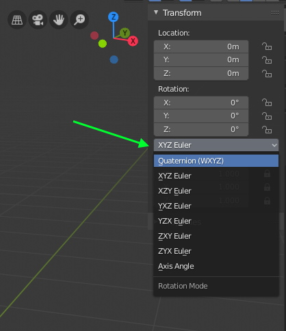
Note
If you don’t use the “Interactive Tweaks” tool, you can ignore this warning. It’s also possible to tweak the bones transforms after retargetting, using an additive animation strip.
Workflow
The Target armature (the one that will receive the animation) must be in the scene. It can be any type of armature (Auto-Rig Pro, Rigify, custom rig…). However, the built-in mapping Presets are made specifically for Auto-Rig Pro armatures as Target.
Important
Make sure to zero-out the armature object Location and Rotation coordinates, errors may raise otherwise. Press Alt-G and Alt-R to reset, or manually set the values to zero.
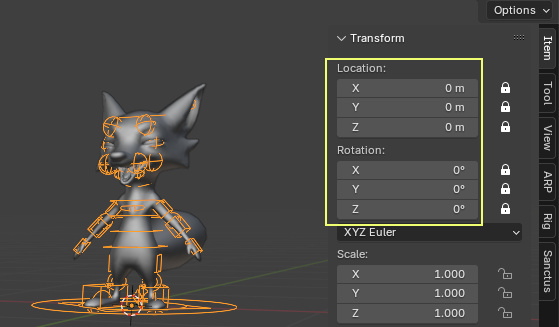
Import the Source Animation
Import the animated skeleton file (typical formats are FBX, BVH…): File > Import > select the file. This animated skeleton will be called the Source armature.
Tip
When importing FBX format, check Automatic Bones Orientations in the import settings to ease the retargetting process. Otherwise, bones may be imported with weird axes, making it harder to visualize the animation.
Then it’s time to configure the Remap settings!
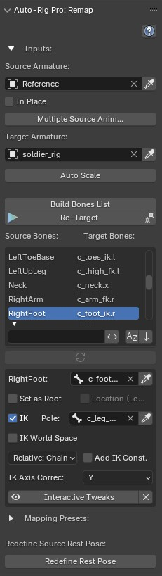
Set Source and Target Armatures
First select the Source armature and assign it in the dedicated field at the top of the menu
Then the Target armature and assign it below
Push Auto-Scale to adjust the source armature scale to the target automatically. Scale it manually (S key) otherwise.
Use the In Place option to keep a looping animation in place (e.g. walking, running…)
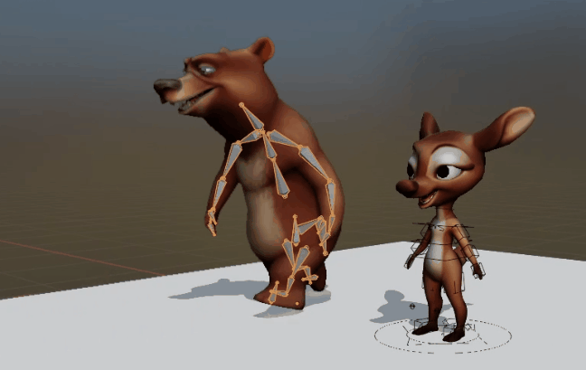
Multiple Animations
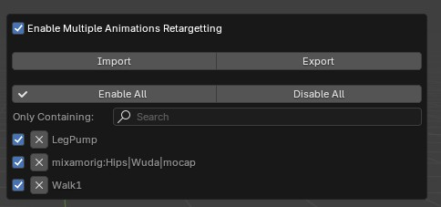
Build Bones List
Now, configure the bones mapping list.
Click Build Bones List
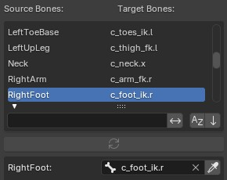
The bones list must be carefully checked and set, either manually or from a preset.
- Preset:
If the Target armature is an Auto-Rig Pro one, a preset may be used. Presets embedded with this add-on are made for traditional mocap skeletons, such as Mixamo, Rokoko, XSens, etc… For example, if the Source armature is from Mixamo, select the Mixamo preset.
- Manual:
- If no preset exists yet for the Source and Target armatures, the bones list must be set manually. It can be exported/imported as a new preset later.Check and modify if necessary the mapping, by changing the target bone for each source bone.It can be a tedious process for sure, but not hard at all. See this video tutorial
Click this button to quickly select in the bones list the bone that is selected in the viewport:
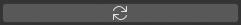
Presets
The bones mapping (source and target bone names in the list) can be imported and exported with the import/export buttons.
Built-in presets can be imported using the downarrow button. The default embedded presets are made for Auto-Rig Pro Target armatures, and traditional Source mocap skeletons such as Mixamo, Rokoko…
The Replace Namespace is a search and replace function when presets have different prefix names than the current bone names (e.g: mixamorig:Hips > matthew:Hips)
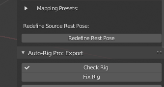
Bones Settings
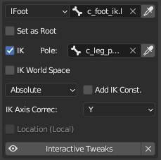
Root Bone
Set as Root: Define this bone as the root bone, typically the first or second bone of the hierarchy (hips or pelvis). Setting it as Root will retarget translation + rotation, while only rotation is used otherwise.
IK settings
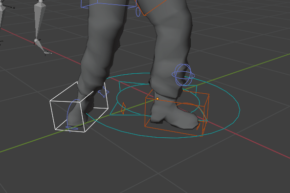
IK feet, no sliding
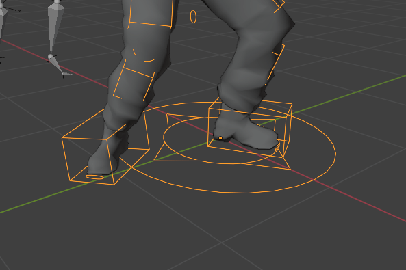
FK feet, noticeable sliding
Pole: Pole bone of the IK chain. When retargeting, the IK pole position is calculated and this bone will be keyframed. If not set, the IK pole position is skipped.
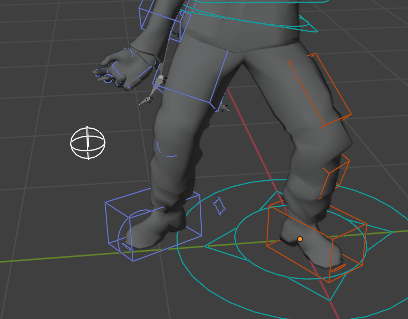
- IK Pole Mode: Defines how the IK pole should be evaluated.
Absolute: Evaluate the exact IK pole position based on the real IK pole vector as defined by the bones geometric plane. Ideal if the input skeleton has high quality, refined animation data.
Relative: Target : The IK pole is treated as a child of the target bone (e.g the foot). Less accurate than absolute, but great if the source animation doesn’t comply with IK constraints requirement, such as broken geometric plane (stretched out leg, arm).
Relative: Chain: The IK pole is treated as a child of the IK bones chain. Less accurate than absolute, but great if the source animation doesn’t comply with IK constraints requirement, such as broken geometric plane (stretched out leg, arm).
IK World Space: Use world IK coordinates instead of relative/local, works better under certain circumstances, for example if the character is spinning.
Add IK Constraints: If enabled, add automatically IK constraints to the target bones when retargeting . Should only be enabled for simple skeleton that are not rigged with constraints yet. Works if the target bones IK hierarchy is valid, e.g. foot parented to calf, calf parented to thigh bone.
IK Axis Correc: Axis used to correct IK bones alignment if necessary, in World Space coordinates. Typically, characters facing the Y axis should have this values set to Y. If facing X, set to X.
Others
Armatures Rest Pose
Make sure both source and target armatures are facing the same direction in rest pose: select them and enter Edit mode (Tab key) to check the rest pose. Retargetting is a picky technical process, things should be in a plain boring state to work properly. If they are not facing the same direction, rotate the whole armature object manually.
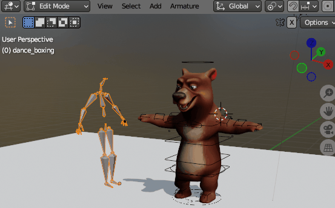
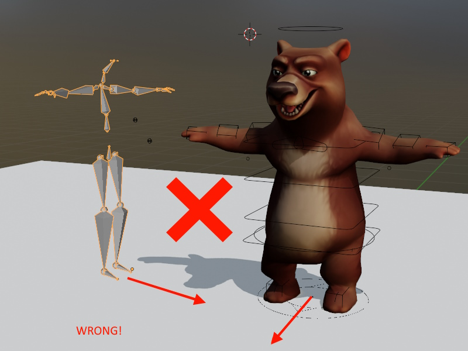
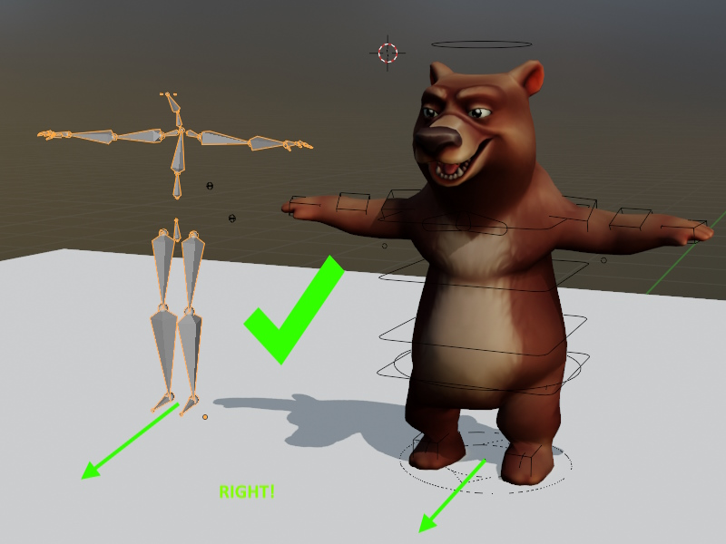
Check the source armature rest pose: if it’s the same as the target armature rest pose (same arms, legs orientations), go to the next step. If not, see below:
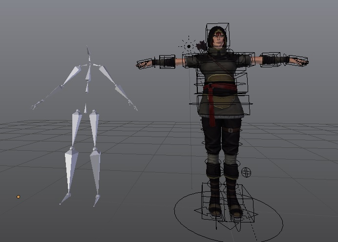
From the picture above we can see the source armature, on the left, has a different rest pose than the target armature on the right (A-pose versus T-pose). So we’ll need to redefine the rest pose of the source armature. No worries, it’s easy! We’re almost done, I promise.
Click the Redefine Rest Pose button
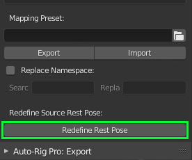
A pop-up menu will show. Tick the Preserve checkbox in order to maintain the current rest pose of the armature, but a new rest pose will be saved internally, hidden in the armature data. This is recommended to keep the armature untouched.
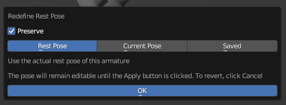
- Below are 3 parameters: Rest Pose, Current Pose, Saved.
- The first one Rest Pose will use the actual rest pose of the armature as the new base editable pose.The second one Current Pose will take a snapshot of the current pose as shown in the viewport and will use it as the base editable pose.The third Saved will backup the latest rest pose, if it was saved with this tool earlier.
The pose will remain editable until clicking Apply. This only defines the base pose to start with.
Select the bones that are not oriented like the target armatures bones (in this case the arms and legs) and click Copy Selected Bones Rotation, wich will copy the corresponding bone direction automatically from the target armature (may not work properly if the poses are too much different, in this case do this manually). Then click Apply to complete.
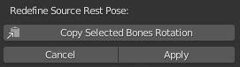
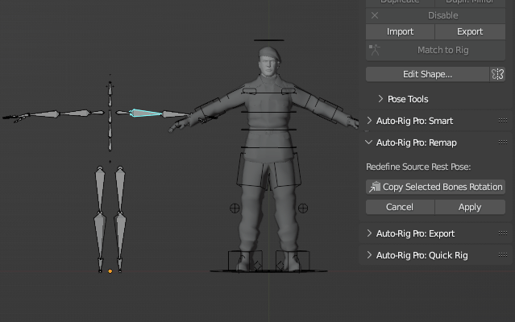
Retargeting
Okay, here we are! Ready to fire the engine.
Click Re-Target to transfer the animation.
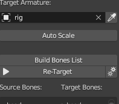
If the bones list was all set with correct settings, and if the rest poses are OK => animation should have been transferred nicely!
If the source and target armatures have very different proportions, it may be necessary to apply some tweaks.
Interactive Tweaks
Interactive tweaks are useful to adjust the bones rotation and position quickly after retargetting, to refine the result.
Note
Interactive Tweaks are per-bone settings. It means each bone can be tweaked independently.
Examples:
After retargetting, the root/pelvis bone is too high, we need it lower: select the pelvis bone in the bones list, set the Additive Location value, and click -Y to move it along the Y axis downward (assuming this bone in your skeleton has its Y axis pointing up).
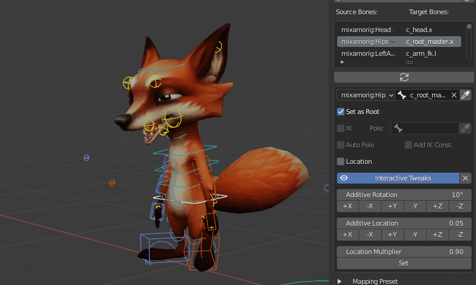
When remapping facial animations, lips bones are moving too much: select a lip bone, set the Location Multiplier value to 0.5 to reduce motions by 50%, and click Set. Repeat the process for each lips bone.
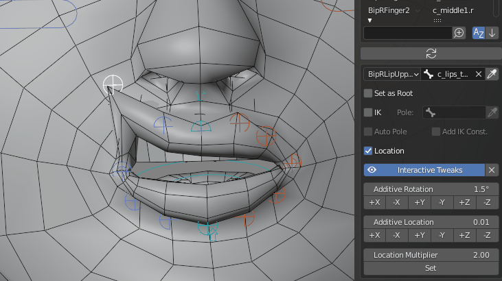
Click the X button next to Interactive Tweaks to revert all tweaks applied.